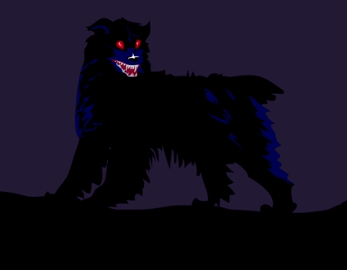

THE HOUND OF THE BASKERVILLES
Sir Charles Baskerville is found lying dead on the grounds of his country house, Baskerville Hall. The cause is ascribed
to a heart attack. Fearing for the safety of Sir Charles's nephew and only known heir, Sir Henry Baskerville, coming
from America to claim his inheritance, Dr James Mortimer travels to London and asks Sherlock Holmes for help.
Mortimer explains that the Baskerville family is afflicted by a curse. Sir Charles Baskerville had become fearful of the
legendary curse and its hellhound. The elderly man's heart was not strong, and he had planned to go to London the next
day. Mortimer says he had seen the footprints of a "gigantic hound" near Sir Charles's body, something not revealed at t
he inquest. Sir Henry is puzzled by an anonymous note delivered to his London hotel room, warning him to avoid the
Devon moors. Holmes says that the note had been composed largely of letters cut from The Times, probably in a hotel,
judging by other clues. Holmes keeps this last detail to himself. When Holmes and Watson later join Sir Henry at his
hotel, they learn one of the baronet's new boots has gone missing.

Despite the note's warning, Sir Henry insists on visiting Baskerville Hall. By the time they return to the hotel, Sir Henry
has had another, newer boot stolen. After all these problems, Holmes got tied up in London with other cases and
Dr.Watson had to acompany Sir Henry to the Baskerville Hall. Sir Henry soon meets Miss Stapleton, introduced to be
the brother of Stapleton, and becomes romantically interested, despite her brother’s intrusions. Barrymore shows Watson
through his telescope the figure of a boy carrying food. Watson departs the house and goes in that direction. He finds the
prehistoric stone dwelling where the unknown man has been staying, goes in, and sees a message reporting on his own
activities. He waits, revolver at the ready, for the unknown man to return.
The unknown man proves to be Holmes. He has kept his location a secret so that Watson would not be tempted to come out
and so he would be able to appear on the scene of action at the critical moment. Holmes and Watson return to Baskerville
Hall where, over dinner, the detective stares at Hugo Baskerville's portrait. Calling Watson over after dinner he covers the
hair to show the face, revealing its striking likeness to Stapleton. This provides the motive in the crime – with Sir Henry
gone, Stapleton could lay claim to the Baskerville fortune, being clearly a Baskerville himself. nder the threat of
advancing fog, Watson, Holmes, and Lestrade lie in wait outside Merripit House, where Sir Henry has been dining.
When the baronet leaves and sets off across the moor, Stapleton looses the hound. Holmes and Watson manage to shoot it
before it can hurt Sir Henry seriously, and discover that its hellish appearance was acquired by means of phosphorus.
Holmes and Watson are only able to find and recover Sir Henry's boot used by Stapleton to give the hound Sir Henry's
scent and find the remains of Dr Mortimer's dog in the mire.
THE END
BACK